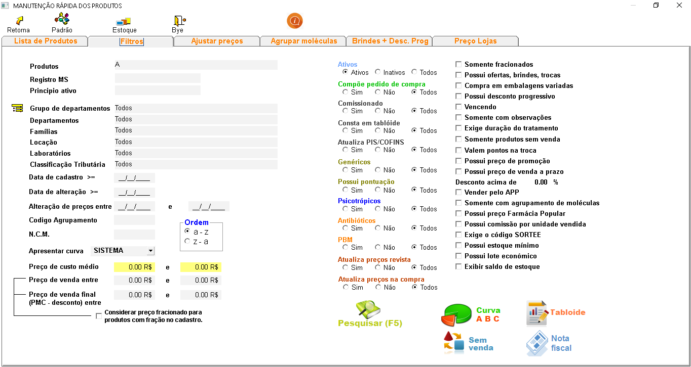
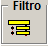
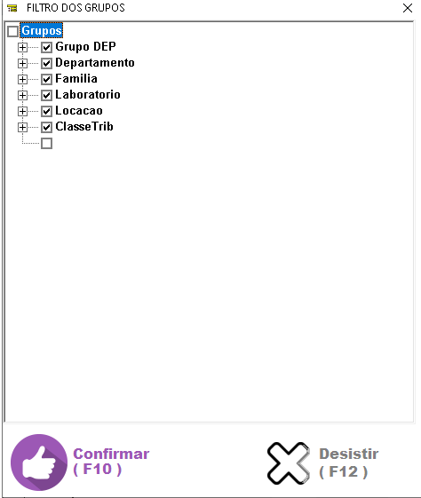
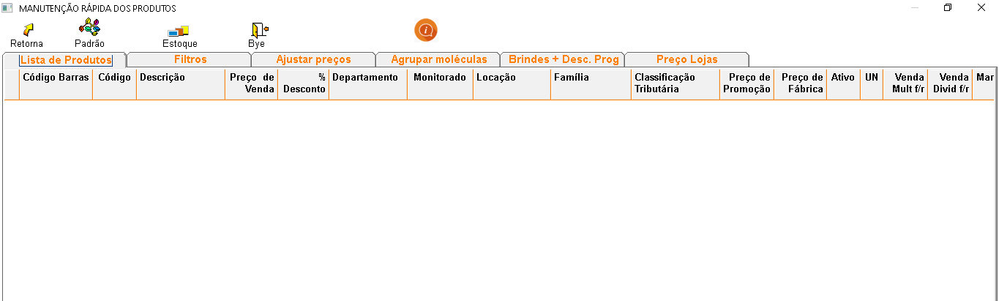

É uma forma de realizar alterações em vários produtos ao mesmo tempo. Aperte no topico que deseja para conhecer a funcionalidade de cada opção.
+Quais os procedimentos para usar a manutenção rápida?
No sistema:
- Realize o filtro dos produtos que deseja fazer alterações e clique em .
- Clique duas vezes com o botão esquerdo do mouse em qualquer lugar da tela e será exibida uma tela para que possam ser executadas as alterações.
- Selecione os produtos e clique sobre qual alteração será feita.
- Também é possível realizar alterações diretamente no produto, selecione o produto, faça as alterações e tecle ENTER para salvar.
Obs.:
- Para selecionar vários produtos aleatoriamente mantenha a tecla CONTROL pressionada e selecione os produtos.
- Para selecionar vários produtos em sequência mantenha a tecla SHIFT pressionada e selecione os produtos.
OBS.: As informações sobre cada campo estão no final da página.
+Descrição dos campos do filtro na manutenção rápida:

- Produtos: Pesquise pelo nome do produto.
- Registro MS: Pesquise pelo registro MS (registro do produto no ministério da saúde).
- Princípio ativo: Pesquise pelo princípio ativo do produto.
- Obs.: Para pesquisar por grupos de departamentos, departamentos, família, localização, laboratórios ou classificação tributária clique em

.
- Na seguinte tela marque os filtros que deseja pesquisar:

- Data de cadastro: Pesquisa pela data de cadastro do produto.
- Data de alteração: Pesquisa pela data de alteração do produto.
- Código agrupamento: Pesquisa pelo código de agrupamento de moléculas.
- N.C.M: Pesquisa pelo N.C.M. do produto.
- Apresentar curva: Caso seja realizada a curva ABC dos produtos será exibida nessa seleção.
- Com preço de promoção: Pesquisa os produtos com preço de promoção cadastrados.
- Desconto acima de 0.00%: Pesquisa os produtos com porcentagem de descontos cadastrados acima do valor mencionado.
- Somente fracionados: Pesquisa produtos cadastrados como fracionados.
- Possui ofertas, brindes: Pesquisa pelos produtos que têm ofertas, trocas e brindes cadastrados.
- Ativos: Pesquisa pelos produtos ativos, inativos ou todos.
- Psicos: Quando selecionada a opção SIM, pesquisa somente produtos marcados como psicotrópicos e se selecionado NÃO, os produtos marcados como psicotrópicos não serão incluídos na pesquisa.
- Genéricos: Quando selecionada a opção SIM, pesquisa somente produtos marcados como genéricos e se selecionado NÃO, os produtos marcados como genéricos não serão incluídos na pesquisa.
- Compõe pedido de compra: Quando selecionada a opção SIM, pesquisa somente produtos marcados como compõe pedido de compra e se selecionado NÃO, os produtos marcados como compõe pedido de compra não serão incluídos na pesquisa.
- Antibióticos: Quando selecionada a opção SIM, pesquisa somente produtos marcados como antibióticos e se selecionado NÃO, os produtos marcados como antibióticos não serão incluídos na pesquisa.
- P.B.M: Quando selecionada a opção SIM, pesquisa somente produtos marcados como P.B.M. e se selecionado NÃO, os produtos marcados como P.B.M. não serão incluídos na pesquisa.
+Tela da lista de produtos filtrados:

- Nesta tela os produtos filtrados serão exibidos conforme cadastro.
- Para alterar um produto, selecione o mesmo, clique no campo correspondente, faça a alteração e tecle ENTER para salvar.
- Para alterar vários produtos, clique duas vezes com o botão esquerdo do mouse sobre a tela e aparecerá uma outra tela no canto direito, conforme imagem ao lado.
- Selecione os produtos e clique duas vezes no campo correspondente e serão alterados automaticamente.
- Clique com o botão direito do mouse sobre os campos MARCAR COMO PBM, COMPOR PEDIDO DE COMPRA, (G) GENÉRICO E ANTIBIÓTICOS, e serão habilitadas as funções para desmarcar.
OBS.:
- Para selecionar vários produtos aleatoriamente mantenha a tecla CONTROL pressionada e selecione os produtos.
- Para selecionar vários produtos em sequência mantenha a tecla SHIFT pressionada e selecione os produtos.
+Tela para ajustar preços nos produtos:
+Tela para agrupar vários produtos em uma mesma molécula:
+O que é agrupamento de moléculas?
É uma forma de classificar vários produtos em um produto principal, para futuros pedidos de compra.
+Quais os procedimentos para usar o agrupamento de moléculas?
No sistema:

- Selecione os produtos a serem agrupados na mesma molécula e informe o produto que será o principal, depois clique em .
- Caso queira desagrupar os produtos de uma molécula, selecione os produtos que estão agrupados e informe o produto principal e clique em .